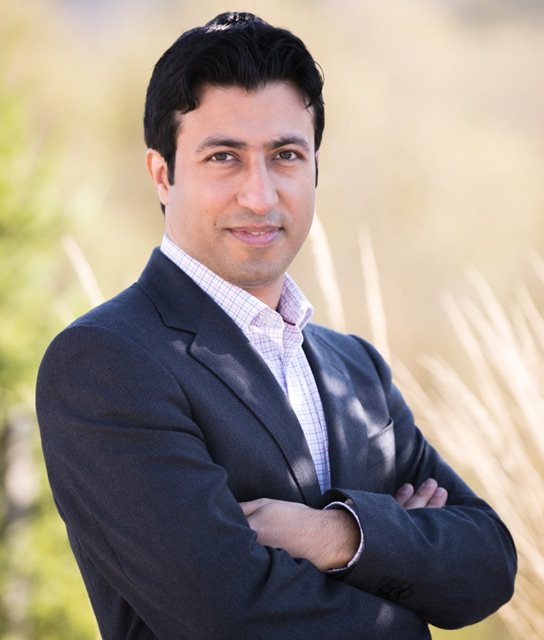

Jalal Sani
I am an Assistant Professor of Accounting at the Gies College of Business, University of Illinois at Urbana-Champaign. My primary research examines how information produced and disclosed by firms, intermediaries, and investors affects allocation of resources across firms and corporate investment decisions, and how these real effects, in turn, influence disclosure choices. My second research agenda studies how environmental reporting influences the pricing of environmental risk and corporate investment.
Curriculum Vitae Google Scholar Gies profile jsani@illinois.edu
Research
Information Disclosure · Financial Reporting Regulation · Environmental Reporting · Disclosure Externalities · Real Effects · Investor Information Acquisition
Publications
- Managerial Delegation within Firms and Peer Information Environment Journal of Accounting and Economics, forthcoming
- Spillover Effects of Mandatory Portfolio Disclosures on Corporate Investment Journal of Accounting and Economics, 76 (November–December 2023): 101641 Presented at the 2022 Journal of Accounting and Economics Conference
- Intangible Investments, Scaling, and the Trend in the Accrual-Cash Flow Association Journal of Accounting Research, 60 (September 2022): 1551–1582 Top 10 Journal of Accounting Research Papers Published in 2022–2023 (2024)
- Disclosure Incentives When Competing Firms Have Common Ownership Journal of Accounting and Economics, 67 (April–May 2019): 387–415
Working Papers
- Sovereign Wealth Fund Ownership and Target Firm Investment Efficiency Revising for third-round review, The Accounting Review
- Real Effects of Banks' Loan Loss Provisioning on Zombie Borrowers Revising for second-round review, Journal of Accounting Research
- Pollution Monitoring and the Pricing of Environmental Risk in Firms
- Patent Disclosures, Examiners, and Greenwashing
- Mandatory Greenhouse Gas Disclosure Impacts on Firms and Workers
- Investor Uncertainty, Analyst Research, and Managers' Acquisition Decisions
Contact
Gies College of Business4009 Business Instructional Facility
515 Gregory Drive
Champaign, IL 61820
jsani@illinois.edu